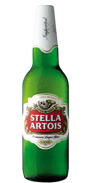

|
Corona Extra 330ml |
Corona Extra is lighter than traditional beers, with a crisp and refreshing taste.
This light, dry beer has pleasant malt and hop notes with a round dry finish.
Regardless of the time of the year, Corona is best served ice cold, with a wedge of lime that complements and intensifies the flavour through the palate.
It's the perfect beer to be enjoyed with a group of friends and is the ideal accompaniment to lighter foods and seafood
|
1.90$ |
|  |
Stella Artois 5000ml |
Stella Artois is one of the world’s best-selling beers and is enjoyed in more than 80 countries. Its full, characteristic flavour and high quality is assured through a superior brewing process and by using the finest ingredients available.
The UK version is brewed, filtered and kegged at Samlesbury. Batches are sent to Magor for pasteurising before being canned or bottled. |
2.90$ |
 |
Carlsberg Elephant 330ml |
Carlsberg Elephant is a true Carlsberg classic. First launched in 1959, it is strong like an elephant in both flavour and alcohol content, offering adventurous beer drinkers across the continent a unique and exotic taste experience.
The colour is light golden amber and the foam white as the tip of the waves of the oceans. The ample use of malt gives Elephant a vinous and rich character. The high hop content in Elephant gives a masculine bitter bite to the beer. |
3.00$ |
 |
Heineken 330ml |
100% Barley malt, choice hops and pure water give this brew unsurpassed clarity. |
3.10$ |